Im Alltag arbeiten
Wie im Alltag bestellt wird, wann die Kasse die Bestellung erhält und was bei Tischen, Sperren und Gerätewechsel passiert.
Die Seite beschreibt die Bedienung ab App 2.0. Die Abläufe an der Kasse sind unverändert; in der App ersetzen sichtbare Schaltflächen die bisherigen Wischgesten, Tischnummern und Mengen werden über Ziffernblock und Auswahlrad eingegeben. Die Bedienung bis App 1.2.1 steht am Ende unter Bedienung bis App 1.2.1.
Tischübersicht
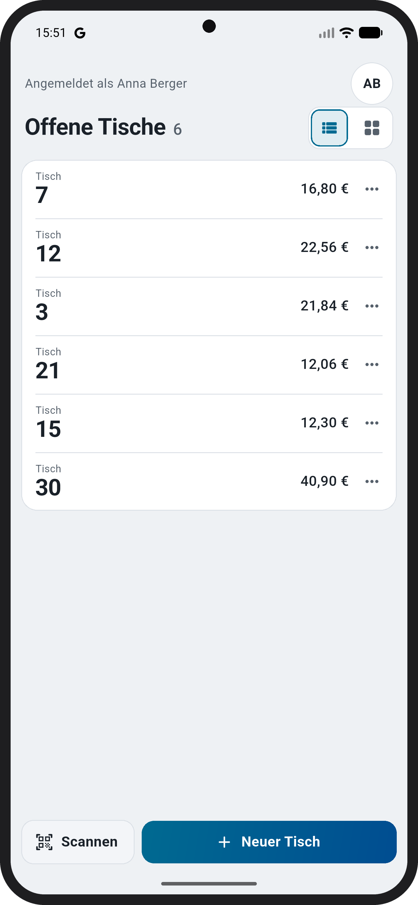
- Oben steht der angemeldete Bediener, rechts daneben das App-Menü (Kreis mit den Initialen).
- Offene Tische zeigt die Anzahl. Mit den beiden Symbolen rechts schalten Sie zwischen Liste und Kacheln um.
- Jede Zeile zeigt Tischnummer und Betrag. Hat ein Tisch mehrere Bons, steht die Bonnummer dabei.
- Über … am Ende der Zeile öffnen Sie die Tischaktionen (siehe Tische umplatzieren, zusammenführen und aufteilen).
- Unten: Scannen öffnet einen Tisch per QR-Code, Neuer Tisch legt einen Tisch an.
- Nach unten wischen gleicht die Tischübersicht sofort mit der Kasse ab.
Bestellung erfassen und senden
Gebuchte Artikel bleiben zunächst auf dem Mobilgerät. Erst wenn der Tisch verlassen wird, gehen alle bis dahin gebuchten Positionen gemeinsam als eine Bestellung an die Kasse und den Küchenmonitor.
- Tippen Sie auf Neuer Tisch, geben Sie die Tischnummer über den Ziffernblock ein und tippen Sie auf Erstellen. Jede numerische Tischnummer ist möglich; Tische müssen vorher nicht angelegt werden. Einen offenen Tisch öffnen Sie durch Antippen in der Tischübersicht.
- Wählen Sie oben die Warengruppe und tippen Sie die Artikel an. Jeder Tipp bucht ein Stück.
- Verlassen Sie den Tisch über den Pfeil links unten. Damit wird gesendet.
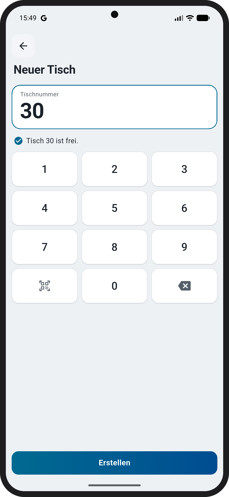
Unter der Nummer zeigt die App, ob der Tisch frei ist, etwa Tisch 30 ist frei. Statt einzutippen können Sie die Tischnummer über das QR-Symbol im Ziffernblock per QR-Code übernehmen.
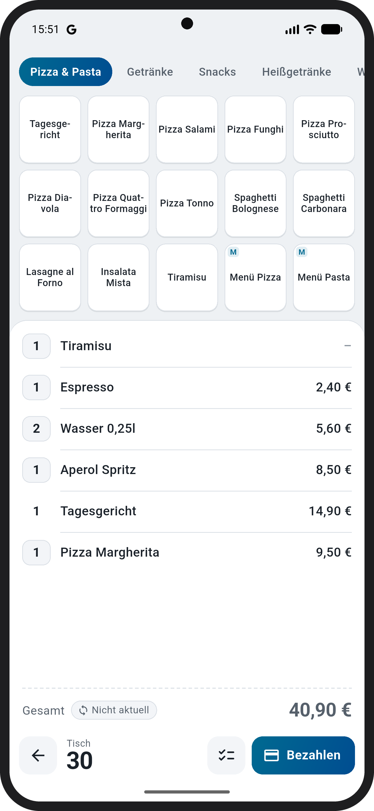
Der geöffnete Tisch zeigt oben die Warengruppen als Reiter und darunter die Artikel. Menüartikel tragen ein M. Unten steht der Bon mit Gesamt. In der unteren Leiste: links der Pfeil zum Verlassen und die Tischnummer, rechts das Auswahlsymbol für Einzelne Artikel bezahlen und Bezahlen.
Noch nicht gesendete Positionen zeigt die App ohne Preis, neben Gesamt steht Nicht aktuell. Tippen Sie auf Nicht aktuell, berechnet die Kasse Preise und Summe, und die App zeigt sie an. Die Bestellung wird dabei nicht gesendet; das geschieht erst beim Verlassen des Tisches.
Wird derselbe Tisch erneut geöffnet und weiter gebucht, entsteht beim nächsten Verlassen eine weitere Bestellung. Eine gesendete Bestellung lässt sich in der App nur noch erhöhen — Verringern und Storno erfolgen an der Kasse.
Artikelinformationen
Halten Sie einen Artikel gedrückt, zeigt die App Preis, Beschreibung, Inhaltsstoffe und Allergene. Schließen führt zurück, ohne zu buchen.
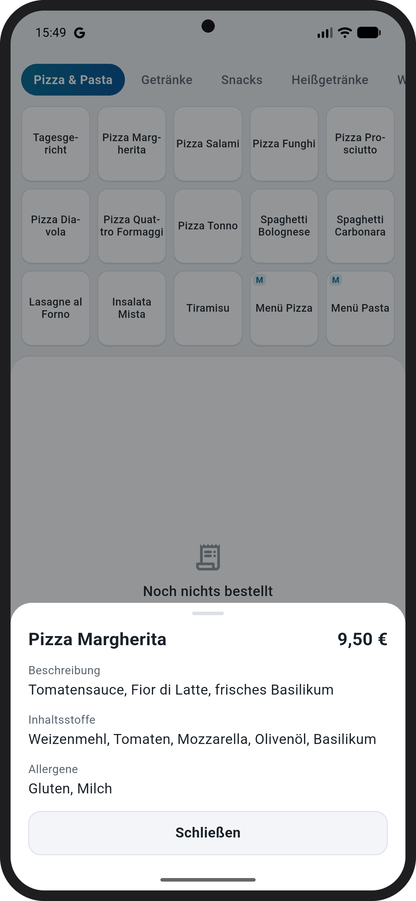
Preis eingeben
Artikel, deren Preis an der Kasse mit Überschreibzwang hinterlegt ist (etwa Diverse Speisen), bucht die App nicht direkt. Beim Antippen öffnet sich ein Eingabefeld für den Preis. Geben Sie den Betrag ein und bestätigen Sie mit OK; der Preis wird für diese Position übernommen. Abbrechen bucht den Artikel nicht. Artikel ohne Überschreibzwang werden wie gewohnt mit ihrem Preis gebucht.
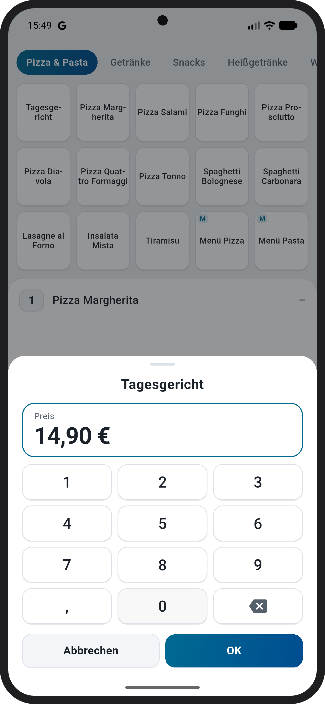
Eine Position mit eingegebenem Preis zeigt im Bon den Preis statt des Mengenfelds; ihre Menge lässt sich nicht über das Auswahlrad ändern.
Eingeben lassen sich Beträge von 0,00 bis 9.999,99 mit höchstens zwei Nachkommastellen; negative Preise sind nicht möglich. Preisregeln der Kasse, etwa eine Happy Hour, wirken auch auf den eingegebenen Preis.
Orderbon
Ist an der Kasse ein Orderdrucker eingerichtet, druckt die Kasse beim Senden der Bestellung einen Orderbon — also wenn der Tisch in der App verlassen wird. Der Orderbon enthält Filiale, Kasse, Bonnummer, Tisch, Bediener, Uhrzeit und die bestellten Positionen mit Menge.
- Bei einer Nachbestellung enthält der Orderbon nur die neu hinzugekommenen Positionen.
- Wird ein Tisch geöffnet und ohne Änderung wieder verlassen, entsteht kein Orderbon.
- Bezahlen, Teilzahlung und Aufteilen eines Tisches lösen keinen Orderbon aus.
Welcher Orderdrucker eine Position druckt, bestimmen die Druckerstichwörter der Kasse: Ist am Artikel ein Stichwort hinterlegt, gilt dieses; hat der Artikel keines, gilt das Stichwort seiner Warengruppe. Jede Position wird auf genau einem Orderdrucker gedruckt. Verteilen sich die Positionen einer Bestellung auf mehrere Orderdrucker, erhält jeder Drucker einen eigenen Orderbon mit seinen Positionen.
Menge und Anmerkung einer Position ändern
Tippen Sie eine Position im Bon an. Darunter erscheinen −, die Menge, + und Anmerkung.
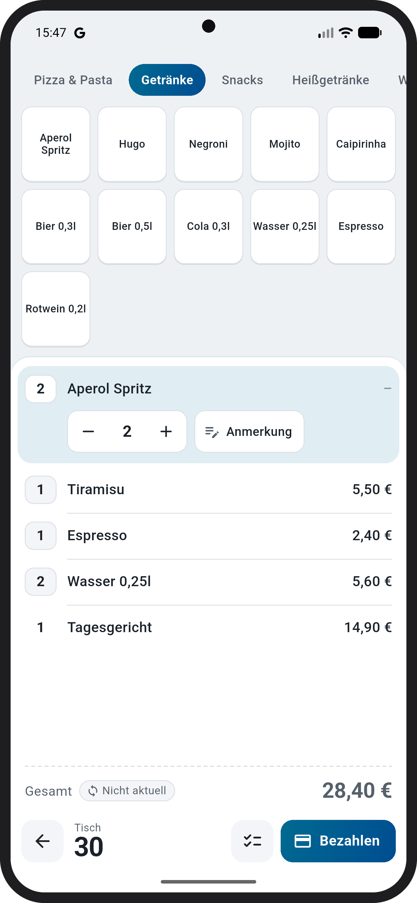
- Solange eine Position noch nicht gesendet ist, ändern Sie die Menge mit − und + in beide Richtungen. Wird ein Menü entfernt, entfallen seine Bestandteile mit.
- Bei bereits gesendeten Positionen zeigt die App, wie viele Stück schon bestellt sind (etwa 1 bereits bestellt). Die Menge lässt sich erhöhen, aber nicht unter die bestellte Menge verringern. Verringern und Storno erfolgen an der Kasse.
- Anmerkung erfasst einen Kommentar für den Küchenmonitor. Hat die Position eine Menge größer als eins, wird ein Stück mit der Anmerkung als eigene Position abgetrennt; die übrigen bleiben ohne Anmerkung.
Menge direkt wählen
Größere Mengen müssen nicht einzeln angetippt werden: Tippen Sie bei einer noch nicht gesendeten Position auf die Mengenangabe links vor dem Artikelnamen. Es öffnet sich ein Auswahlrad. Wählen Sie die Menge, etwa 16, und übernehmen Sie sie mit OK. Gesendet wird wie gewohnt beim Verlassen des Tisches.
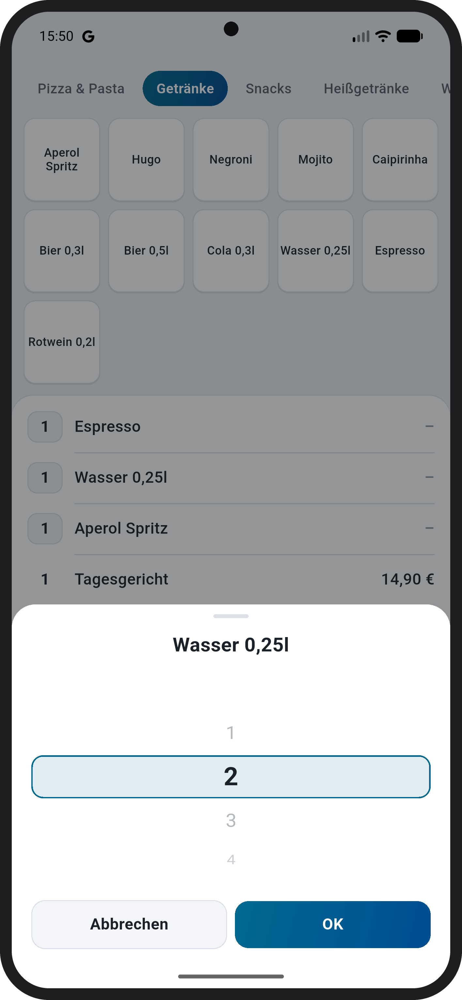
Den Stornobon für die Küche druckt die Kasse, sobald der Tisch dort verlassen wird; bleibt der Tisch nach dem Storno geöffnet, erreicht der Storno die Küche erst später.
Menü zusammenstellen
Tippen Sie einen Menüartikel an. Die App führt durch die Komponentengruppen des Menüs; oben stehen die Gruppen als Schritte, rechts die Vorgabe, etwa Pflicht · 1 wählen.
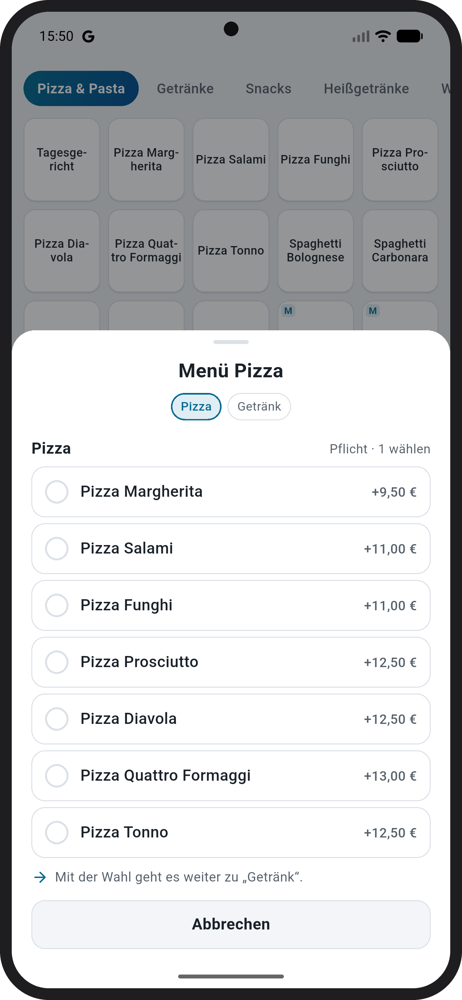
- Wählen Sie je Gruppe die Komponente. Hinter jeder Komponente steht ihr Preis als Aufschlag, etwa +9,50 €. Nach der Wahl springt die App selbst zur nächsten Gruppe.
- Tippen Sie auf Hinzufügen. Die Schaltfläche zeigt den Menüpreis. Mit Zurück gelangen Sie zur vorherigen Gruppe, mit Abbrechen verwerfen Sie das Menü.
Im Bon steht das Menü mit seinen Komponenten als eine Position. Auswahlmenüs werden immer als eigene Position geführt, auch bei gleicher Auswahl.
Warengruppen sortieren
Halten Sie eine Warengruppe zwei Sekunden gedrückt und verschieben Sie sie an die gewünschte Stelle. Die Reihenfolge wird nur auf dem jeweiligen Mobilgerät gespeichert — weder zur Kasse noch zu anderen Geräten übertragen — und bleibt nach einem Neustart der App erhalten. Zurücksetzen über Einstellungen → Gruppenreihenfolge zurücksetzen.
Synchronisieren
Preise und Rabatte berechnet ausschließlich die Kasse. Die App gleicht die Tische automatisch alle 15 Sekunden mit der Kasse ab, die Artikel alle 15 Minuten. Die Abstände stellen Sie unter Einstellungen → Tischsynchronisation (5 bis 60 Sekunden) und Einstellungen → Artikelsynchronisation (1 bis 30 Minuten) ein. Sofort abgleichen: in der Tischübersicht nach unten wischen.
Tische umplatzieren, zusammenführen und aufteilen
Tippen Sie in der Tischübersicht auf … am Ende der Tischzeile. Zur Wahl stehen:
| Aktion | Wirkung |
|---|---|
| Umplatzieren | Alles auf einen anderen Tisch setzen |
| Zusammenführen | Andere Tische auf diesen Tisch holen |
| Aufteilen | Einen Teil auf einen anderen Tisch setzen |
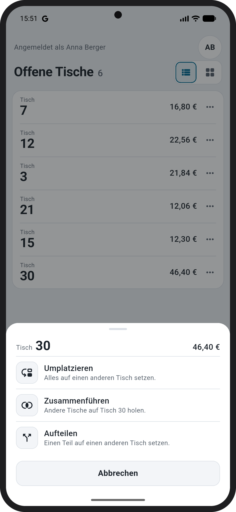
Zusammenführen
- Wählen Sie Zusammenführen am Tisch, auf dem die Positionen zusammenkommen sollen (Zieltisch).
- Markieren Sie einen oder mehrere Tische, deren Positionen übernommen werden. Alle und Keine markieren alle Tische bzw. heben die Auswahl auf. Unten steht, welchen Betrag der Zieltisch danach hat.
- Tippen Sie auf Zusammenführen. In der Tischübersicht steht danach nur noch der Zieltisch mit dem neuen Betrag.
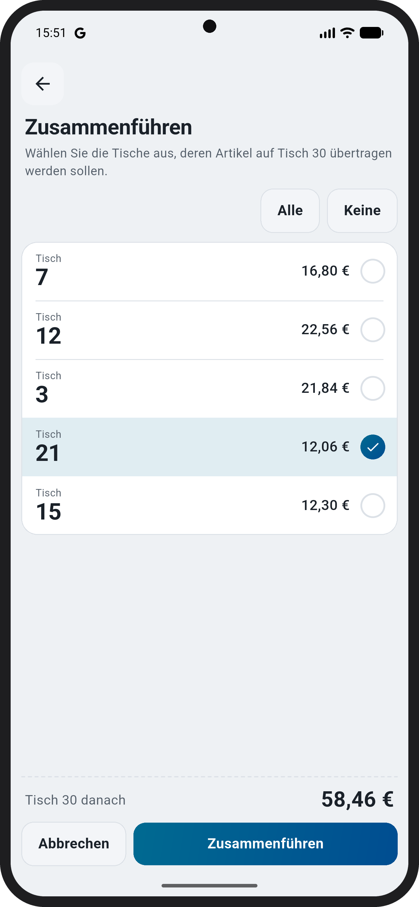
Beim Zusammenführen werden gleiche Artikel ohne Kommentar zu einer Position zusammengefasst — aus zweimal zwei Brötchen wird eine Position mit vier. Positionen mit Kommentar und Wiegeartikel bleiben eigene Positionen. Der Zieltisch wird danach erneut an den Küchenmonitor gesendet. Der Ausgangstisch verschwindet aus der Tischübersicht; sein Beleg wird an der Kasse storniert.
Aufteilen
- Wählen Sie Aufteilen und geben Sie die Nummer des Zieltisches über den Ziffernblock ein. Tippen Sie auf Weiter.
- Stellen Sie je Position mit Mehr und Weniger ein, wie viele Stück auf den Zieltisch wandern. Alle und Keine wählen alles bzw. nichts. Unten steht der Betrag, der auf den Zieltisch geht.
- Tippen Sie auf Umbuchen.
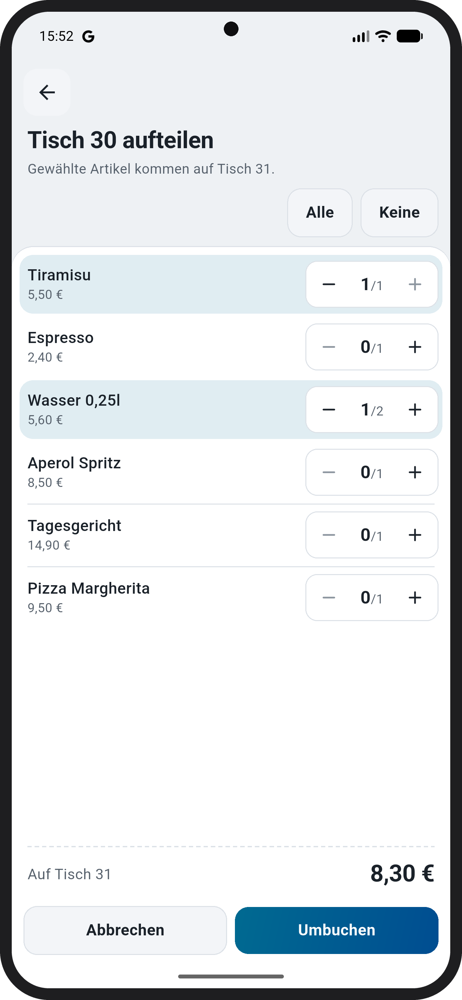
Ab ITR Kasse 5.55 werden die Positionen dabei verschoben statt neu erfasst. Sie behalten Preis, Rabatte und das, was die Küche bereits gedruckt hat; es wird kein Rabatt erneut angewendet und keine neue Bestellsignatur erzeugt. Beide Tische gehen anschließend an den Küchenmonitor: Die verschobenen Positionen verschwinden vom Ticket des Ausgangstisches und erscheinen auf dem des neuen.
Ein Tisch lässt sich nicht vollständig aufteilen — wandern alle Positionen, ist das ein Umsetzen des Tisches. Dafür verwenden Sie Umplatzieren.
Bezahlen
- Tippen Sie im geöffneten Tisch auf Bezahlen. Die App zeigt den Betrag Zu bezahlen.
- Wählen Sie unter Zahlart den Zahlweg. Zur Auswahl stehen die Zahlwege, die an der Kasse für Mobilgeräte freigegeben sind; kombinierte Zahlwege sind nicht möglich.
- Wählen Sie bei Bedarf unter Trinkgeld einen Vorschlag: Ohne, gerundete Beträge mit dem jeweiligen Trinkgeld (etwa 20,00 € mit +2,00 €) oder Anderer Betrag.
- Tippen Sie auf Abschließen.
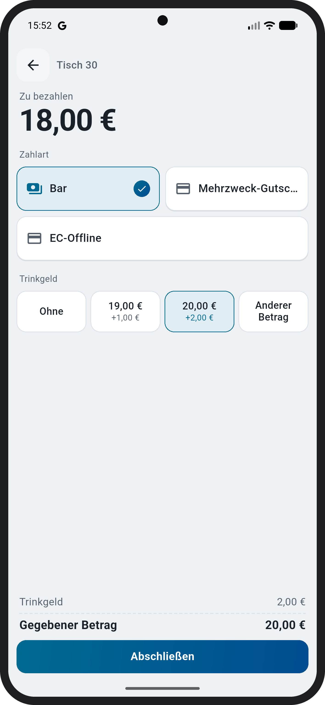
Die Kasse verbucht den Bonbetrag. Der gewählte Trinkgeldvorschlag geht als gegebener Betrag an die Kasse: Der Bon zeigt ihn unter Gegeben, die Differenz unter Zurück.
Kartenzahlungen führen Sie am separaten Kartenterminal aus; die App steuert das Terminal nicht an und verbucht die Zahlung mit dem gewählten Zahlweg. Bei Barzahlung berechnet die App das Rückgeld.
Nach der Zahlung zeigt die App Bezahlt mit dem digitalen Bon. Unter QR-Code scannt der Gast den Bon, unter Bon sehen Sie das Bonbild. Im Browser öffnen zeigt den Bon im Browser des Geräts, Fertig führt zurück zur Tischübersicht.
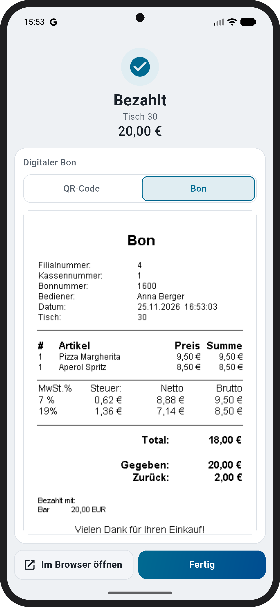
Ist die technische Sicherheitseinrichtung (TSE) der Kasse nicht aktiv, zeigt die App oben ein rotes Info-Symbol. Kassieren ist trotzdem möglich, der Beleg wird aber möglicherweise nicht signiert. Prüfen Sie dann die TSE an der Kasse.
Einzelne Positionen bezahlen
Ab ITR Kasse 5.55 kann ein Gast nur seine eigenen Positionen bezahlen, während der Tisch für die übrigen Gäste offen bleibt.
- Tippen Sie im geöffneten Tisch auf das Auswahlsymbol links neben Bezahlen. Die Ansicht Einzelne Artikel bezahlen listet alle Positionen mit einem Zähler, etwa 0/1.
- Stellen Sie mit + und − ein, was der Gast bezahlt. Die Zwischensumme unten zeigt den Betrag; sie wird von der Kasse berechnet.
- Tippen Sie auf Auswahl bezahlen und schließen Sie die Zahlung wie unter Bezahlen ab.
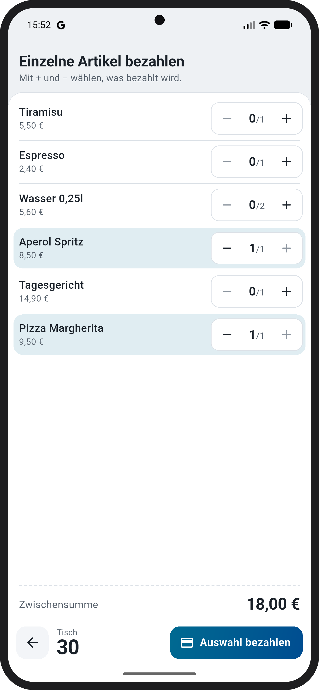
Nach Fertig bleibt die App in der Auswahl und meldet den offenen Rest, etwa Teilzahlung erledigt – auf Tisch 30 ist noch 28,40 € offen. Die bezahlten Positionen sind aus der Liste verschwunden, der nächste Gast kann direkt zahlen. Der Tisch steht danach mit dem Restbetrag in der Tischübersicht.
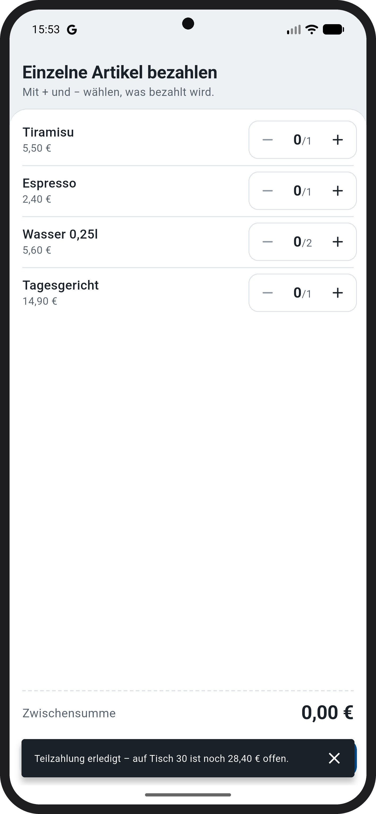
Die bezahlten Positionen erhalten einen eigenen Beleg mit eigener Bonnummer, eigener Zahlung und eigener TSE-Signatur. Eine Position lässt sich nur teilweise auswählen, wenn sie teilbar ist: kein Menü, kein Wiegeartikel, eine ganze Stückzahl, kein Anteil eines Bonrabatts, keine Tickets, Seriennummern oder Bonuspunkte. Trägt der ganze Bon einen Rabatt, ist die Teilzahlung nicht möglich. Werden alle Positionen vollständig gewählt, ist das die Zahlung des ganzen Tisches.
Am Küchenmonitor ändert sich durch eine Teilzahlung nichts: Die bezahlten Positionen bleiben auf dem Ticket stehen, auf dem sie bestellt wurden, und der bezahlte Beleg erscheint dort nicht als neue Bestellung.
Modifier
Übliche gastrotypische Modifier werden verarbeitet, etwa Happy-Hour-Varianten auf Positionsebene. Kunden- oder bontypspezifische Modifier werden nicht unterstützt; betroffene Belege müssen an der Kasse erfasst und abgeschlossen werden.
Positionskommentare / Küchentext
Ein Kommentar (Küchentext) macht die Position zu einer eigenen Position; gleiche Artikel mit und ohne Kommentar werden nicht zusammengefasst. Der Kommentar lässt sich auch nachträglich ergänzen und wird sofort am Bon gespeichert. An den Küchenmonitor geht er mit der Bestellung: Ein nur nachgetragener Kommentar löst keine neue Bestellung aus – er erreicht die Küche erst, wenn die Position erneut gesendet wird, etwa durch eine Mengenerhöhung.
Nachbestellungen
Wird derselbe Artikel später erneut bestellt, erhöht die App die Menge der bestehenden Position statt eine neue anzulegen. Ab App 1.2.1 zeigt die Position bis zum Senden, wie viele Stück neu hinzugekommen sind, etwa +1 neu. Zwei Ausnahmen, bei denen eine neue Position entsteht:
- Auswahlmenüs werden immer als eigene Position geführt.
- Trägt die bestehende Position einen Positionskommentar, entsteht eine neue Position. Der Kommentar bleibt dadurch der ursprünglichen Menge zugeordnet.
Erhöht eine Nachbestellung die Menge einer am Küchenmonitor bereits abgearbeiteten Position, zeigt der Küchenmonitor nur die neu bestellte Menge als neue Position. Aus „ein Brötchen ausgegeben, ein weiteres bestellt“ wird am Monitor 1x Brötchen mit Status Neu; an der Kasse steht die Position mit der Gesamtmenge 2. Geprüft mit Küchenmonitor 26.10.44.
Tischsperren
Solange ein Gerät einen Tisch bearbeitet, ist dieser für die Kasse und alle anderen Geräte gesperrt; die Kasse verweigert dann den Zugriff. Die Sperre fällt weg, sobald das Gerät oder die Kasse den Bearbeitungsmodus verlässt.
Ab ITR Kasse 5.55 gibt die App den Tisch frei, sobald die Bedienung die Tischseite verlässt — unabhängig vom Weg: über den Pfeil links unten, nach einer Teilzahlung oder über eine Fehlermeldung, die zur Startseite zurückführt. Der Tisch steht danach sofort wieder zur Verfügung.
Lässt sich die Sperre wegen eines Verbindungsproblems nicht regulär aufheben, gibt die Kasse den Tisch nach fünf bis sechs Minuten automatisch frei. Diese Zeit ist fest vorgegeben und nicht einstellbar.
Als gesperrt sieht einen Tisch nur, wer ihn nicht selbst bearbeitet. Auf dem Gerät, das die Sperre hält, erscheint er normal. Meldet ein Bediener, ein Tisch sei belegt, prüfen Sie deshalb, welches andere Gerät ihn gerade geöffnet hat.
Gerätewechsel
Ein Bediener arbeitet immer nur auf einem Mobilgerät. Meldet sich derselbe Bediener an einem zweiten Gerät an, übernimmt dieses die Sitzung und die Verbindung des ersten endet. Der Wechsel ist so ohne Abmeldung möglich, und es kann nicht versehentlich von zwei Geräten mit demselben Bediener gebucht werden.
Bestellungen, die noch nicht gesendet wurden, gehen beim Gerätewechsel und beim Beenden der App verloren. Verlassen Sie den Tisch — damit wird gesendet —, bevor Sie das Gerät wechseln oder die App schließen.
Zusammenspiel mit dem Küchenmonitor
Ist ein Küchenmonitor eingerichtet, erhält er jede gesendete Bestellung zusammen mit der Kasse. Der Monitor wird einmal mit einer Kasse der Filiale gekoppelt und ist danach auf allen Kassen dieser Filiale bekannt; die Bestellungen der App erreichen ihn ohne weitere Einstellung. Einrichtung, Kopplung und Fehlersuche stehen im Kapitel Küchenmonitor.
App-Menü und Einstellungen
Das App-Menü öffnen Sie über den Kreis mit den Initialen oben rechts. Es enthält Einstellungen, Hilfe, Abmelden und unten die App-Version.
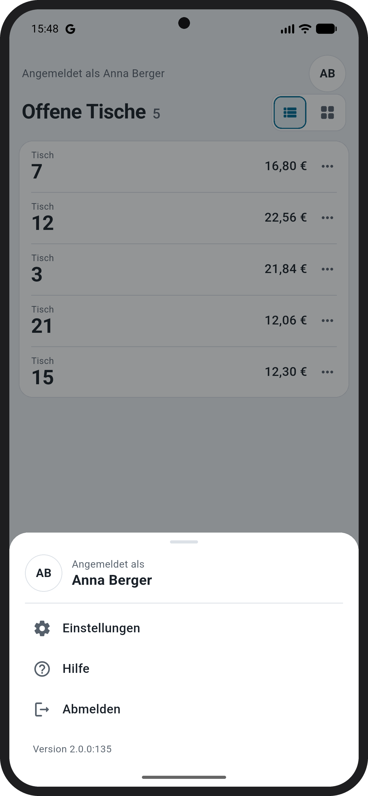
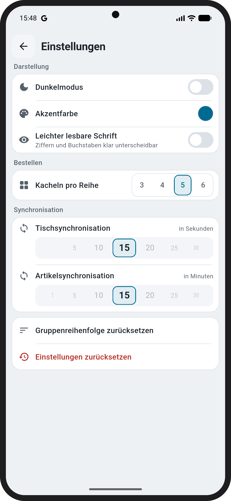
| Einstellung | Wirkung | Standardwert |
|---|---|---|
| Dunkelmodus | dunkle Darstellung | aus |
| Akzentfarbe | Farbe für Schaltflächen und Markierungen | Blau |
| Leichter lesbare Schrift | Ziffern und Buchstaben klar unterscheidbar | aus |
| Kacheln pro Reihe | Artikel je Reihe beim Bestellen: 3 bis 6 | 5 |
| Tischsynchronisation | Abgleich der Tische mit der Kasse: 5 bis 60 Sekunden | 15 |
| Artikelsynchronisation | Abgleich der Artikel mit der Kasse: 1 bis 30 Minuten | 15 |
| Gruppenreihenfolge zurücksetzen | eigene Reihenfolge der Warengruppen verwerfen | – |
| Einstellungen zurücksetzen | alle Einstellungen auf Werkseinstellung, nach Rückfrage | – |
Die Einstellungen gelten nur für das jeweilige Mobilgerät.
Mit Dunkelmodus zeigt die App alle Ansichten dunkel; Aufbau und Bedienung bleiben gleich. Die Abbildungen auf dieser Seite zeigen die helle Darstellung.
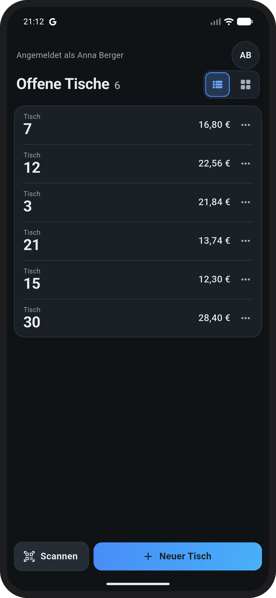
Bedienung bis App 1.2.1
Bis App 1.2.1 wird die App über Wischgesten bedient. Abläufe und Ergebnisse an der Kasse sind dieselben wie oben beschrieben.
| Ort | Geste | Wirkung | ab App 2.0 |
|---|---|---|---|
| Artikel | gedrückt halten | Artikelinformationen anzeigen | unverändert |
| Bestellposition | nach links wischen (bis App 1.2: nach rechts) | Menge ändern | Position antippen, Weniger/Mehr |
| Bestellposition | nach rechts wischen (bis App 1.2: nach links) | Anmerkung erfassen | Position antippen, Anmerkung |
| Tischübersicht | nach rechts wischen | Tisch umplatzieren oder zusammenführen | … am Tisch |
| Tischübersicht | nach links wischen | Tisch aufteilen | … am Tisch |
| Hauptansicht | nach unten wischen | mit der Kasse synchronisieren | unverändert |
| Geöffneter Tisch | nach unten wischen | Preise und Summe abrufen | Nicht aktuell antippen |
| Warengruppe | zwei Sekunden halten, dann verschieben | Reihenfolge ändern | unverändert |
Einzelne Positionen bezahlen bis App 1.2.1: Auswahlsymbol links neben dem Bezahlen-Symbol, dann die Positionen antippen, bis die gewünschte Menge eingestellt ist.